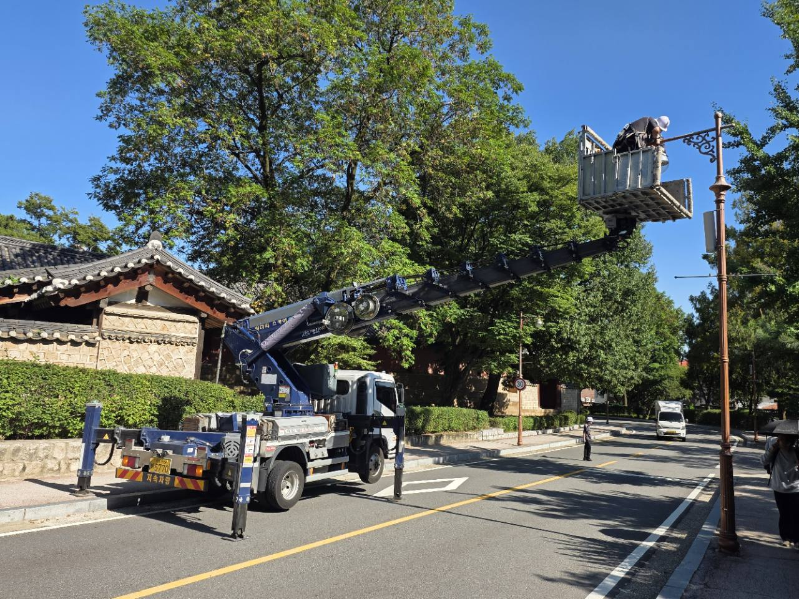
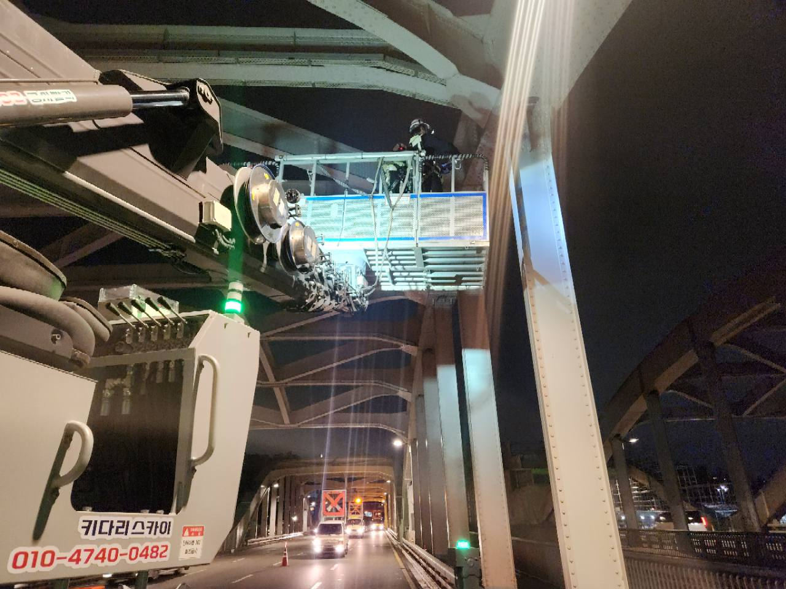
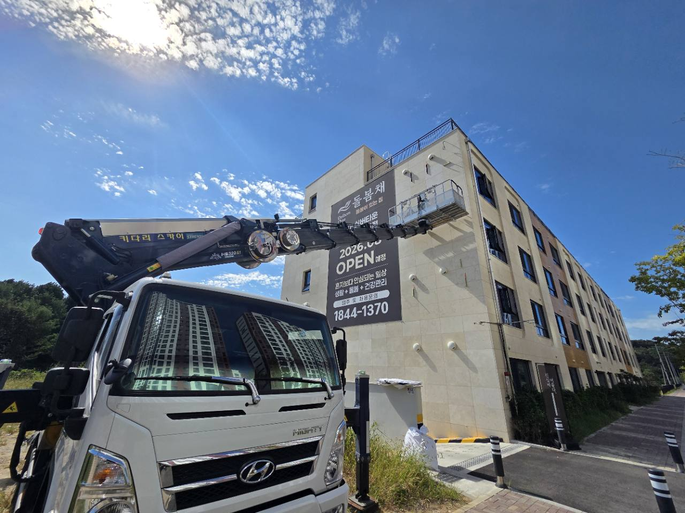
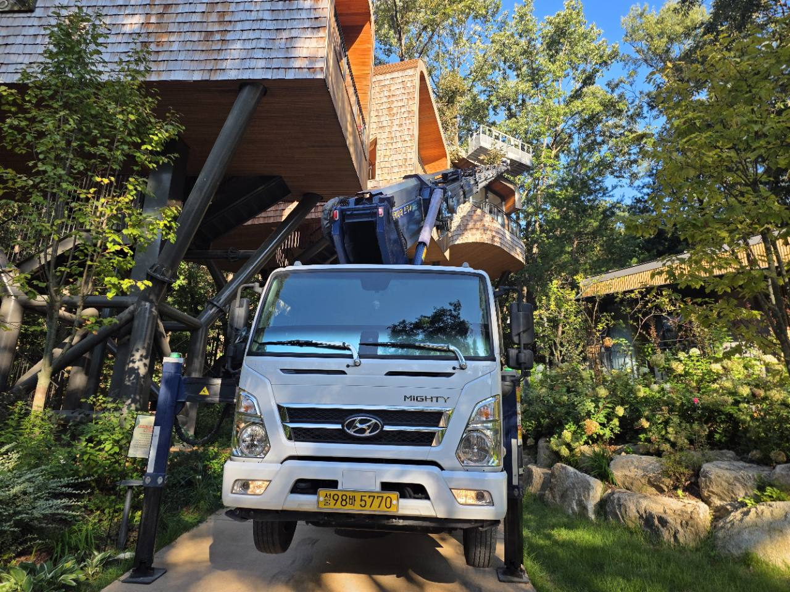
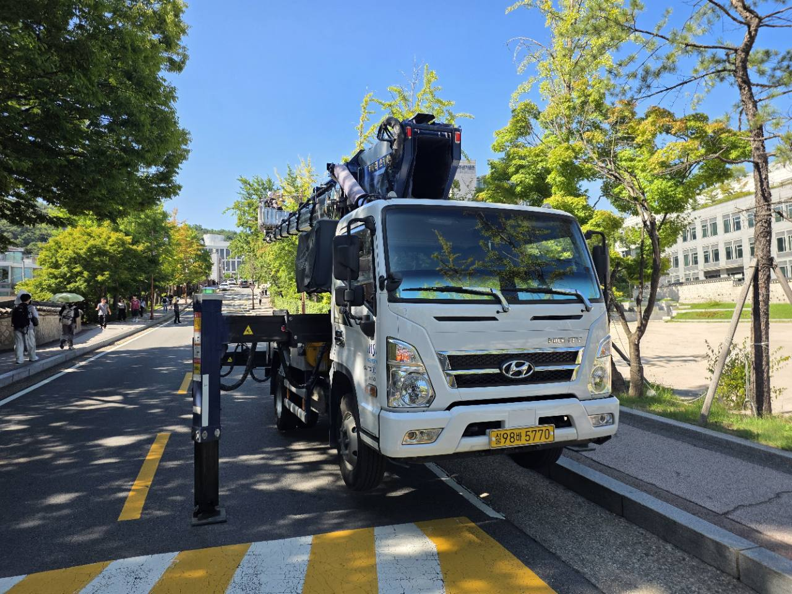

01 — COMPACT1 TON
WORKING HEIGHT18m대표 모델 최대 높이
1톤 스카이차 18m
좁은 골목 · 주택가 · 소형 간판

READY FOR YOUR SITE
좁은 골목부터 높은 건물까지.
작업 높이와 현장 조건에 맞는 장비를 상담합니다.
01 / EQUIPMENT
높이만 보지 않습니다.
진입로, 작업 거리, 설치 공간까지 함께 확인합니다.
좁은 골목 · 주택가 · 소형 간판
도심 간판 · 외벽 · 다양한 고소작업
중층 건물 · 외벽 보수 · 설비 작업
높은 외벽 · 대형 간판 · 구조물
표시 높이는 대표 모델의 최대 작업 높이입니다. 실제 작업 가능 범위는 작업 거리·하중·현장 조건에 따라 달라집니다.
02 / WHAT WE DO
설치, 교체, 철거와
높은 곳의 광고물 작업
외벽 보수와 코킹,
방수 점검 및 페인트 작업
높은 층의 유리 청소,
창호 교체와 유지보수
조명, CCTV, 배관과
통신 설비 설치·점검
높은 가지 정리와 전정,
주변 시설물 확인 후 작업
높은 층고와 지붕 설비,
태양광 설치 및 유지보수
공사 수행 범위와 인력·자재는 상담 시 별도로 확인합니다.
03 / ON THE FIELD
사진 속 높이보다 중요한 건 현장의 조건.
작업 위치와 차량을 세울 공간을 함께 살핍니다.

FIELD / 01야간 작업대와 주변 구조물 확인

FIELD / 02작업 지점과 차량 배치 공간 확인

FIELD / 03진입로 폭과 주변 수목 확인
작업대 위치와 주변 통행 동선 확인

FIELD / 05차량 배치와 지지대 설치 공간 확인
직접 제공해 주신 실제 현장 사진입니다. 촬영 지역이 확인되지 않아 특정 지역의 작업 사례로 표시하지 않습니다.
04 / NATIONWIDE
시·도부터 읍·면·동까지 지역을 찾아보세요.
해당 현장의 장비와 배차 가능 일정은 전화로 확인합니다.
지역 자료를 불러오는 중입니다.
현장 주소·작업 높이·희망 날짜를 알려주세요.
이 지역 장비 전화 상담 ↗법정동 기준의 기존 지역 자료를 활용했습니다. 행정동 이름과 다를 수 있습니다.
05 / HOW TO BOOK
작업 지역과 진입로 폭,
차량을 세울 공간을 확인해 주세요.
필요한 높이와 작업 종류,
자재·탑승 인원을 알려주세요.
장비와 현장 조건을 확인한 후
견적과 가능한 일정을 안내합니다.
차량 일정과 현장 여건을 확인한 뒤 가능 여부를 안내합니다. 희망 날짜·시간과 작업 내용을 전화로 알려주세요. 야간에는 조명·소음·진입 조건도 함께 확인합니다.
차량이 들어갈 공간과 지지대를 설치할 공간을 각각 확인해야 합니다. 골목 폭, 회전 공간, 주변 장애물 정보를 알려주시면 적합한 장비를 상담합니다.
카드결제가 가능합니다. 예약 전 카드결제 예정임을 미리 말씀해 주세요. VAT는 별도입니다. 대형·특수 장비는 필요한 높이와 현장 조건을 확인해 상담합니다.
LET’S GET TO WORK
키다리스카이차 · 전국 스카이차 임대 상담